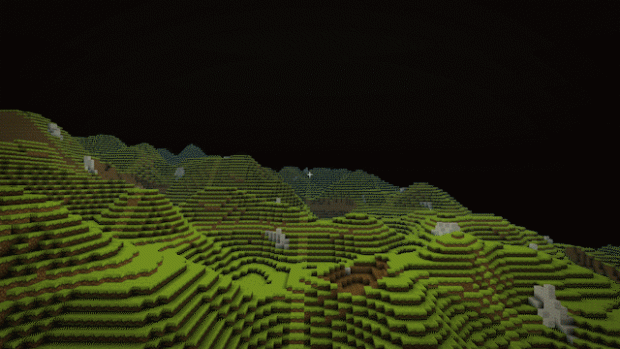
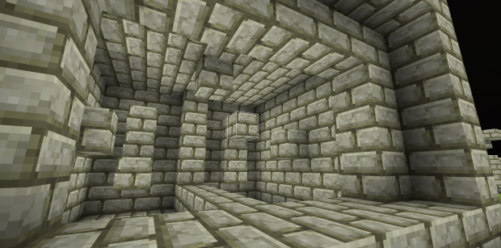

New Soils
New Soils is a Minecraft clone I made in Javascript. It has a few key differences from Minecraft, most significantly a cubic chunk system.

I am no longer working on this project, but I feel I might return to it one day.

More information can be found here. The source code is here.